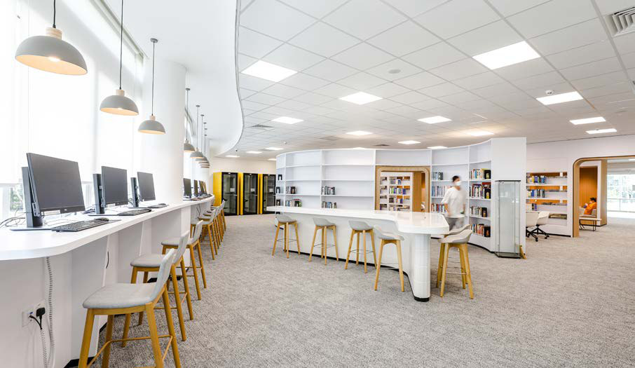
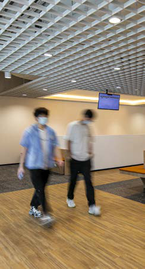

Buildings teach you things when people arrive. Phase 2 was about listening.
Post-occupancy tuning refined airflows and temperature set-points, trimmed fan speeds to cut noise, and sharpened control sequences so classrooms hit comfort faster after changeovers.
Power and data points were added where teaching teams found new rhythms; maintenance access was improved where experience showed tight spots. Small moves, measurable gains.
By the time Phase 3 rolled around, curriculum and class sizes had shifted and hybrid delivery was firmly part of the picture. Mint’s task was to expand capacity without a rebuild. Electrical distribution was extended for higher device density; data and AV provisions grew with it.
On the ACMV side, additional zones and smart controls helped target cooling to occupied spaces and squeeze more out of existing plant. The campus could flex, and the energy profile stayed sensible.


The real test of an engineering contractor isn’t a clean empty site: it’s a live building filled with people who need it to work every hour of the day.
Phase 4 demanded surgical sequencing. Night works kept noise down; sectional handovers split projects into bite-sized pieces; dust and odour controls protected teaching spaces.